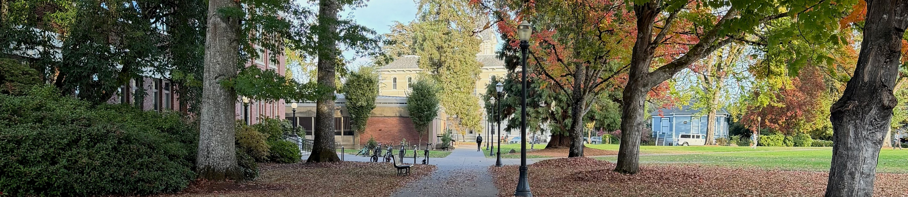
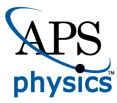
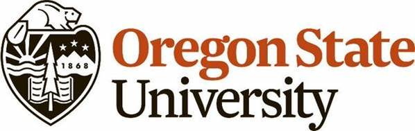
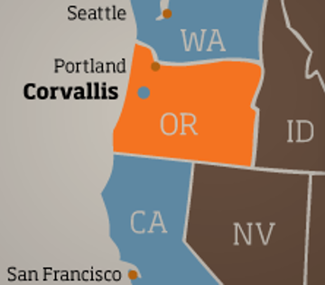

APS Northwest Meeting 2027
June 15-17, 2027
Oregon State University
Physics Department
Corvallis, Oregon


Date and Location
We are excited to invite you to this year's APS Northwest Conference!
This year's meeting will be held June 15-17 at the Oregon State University, in Corvallis, Oregon.
Oregon State University
LaSells Stewart Center
The banquet will be held at the LaSells Stewart Center on Friday, June XX
We look forward to seeing you there!
Important Dates
Abstract submission is open. Please submit your abstract to APS abstracts by Friday, May X, 2027.
Registration will open on XX.
Early registration will close on Friday, May X, 2027.
Regular registration will close on Wednesday, June X, 2027.
On-site registration will be available.
You must submit an abstract and register for the meeting separately.
Abstract Submission
Abstract submission is open. Please submit your abstract to APS abstracts by Friday, May XX, 2027.
For general information about submission guidelines, review APS Submission Policies and Contributed Abstract Guidelines.
If you need an invitation letter for visa purposes, reach out to abs-help@aps.org for help.
You must submit an abstract and register for the meeting separately.
Registration
| Registration | APS Member | APS Graduate Student | Undergraduate |
|---|---|---|---|
| Early | $75 | $35 | $25 |
| Regular | $90 | $45 | $30 |
| On Site | $100 | $50 | $35 |
Early registration will close on Friday, May XX, 2027.
Regular registration will close on Wednesday, June XX, 2027.
On-site registration will be available.
When registering, you will have the option to register for the banquet dinner (held at the LaSells Stewart Center).
Graduate students and undergraduate can receive complimentary APS Membership for their first year.
The cost of the banquet dinner is $XX for non-students and $XX for students. You may also buy dinner tickets for guests.
Please contact registrar@aps.org with any registration questions.
You must submit an abstract and register for the meeting separately.
Program
The full program will be posted here once finalized.
Schedule
| Time | Activity | Location |
|---|---|---|
| Tuesday, June 15 | ||
| 6:00 p.m. | Welcome Reception | OSU: LaSells Stewart Center |
| Wednesday, June 16 | ||
| 8:00 a.m. | Breakfast | OSU: LaSells Stewart Center |
| 9:00 a.m. | Plenary Session | LaSells Stewart Center |
| 10:30 a.m. | Coffee Break | LaSells Stewart Center |
| 11:00 a.m. | Plenary Session | LaSells Stewart Center |
| 12:30 p.m. | Lunch and Poster Session | LaSells Stewart Center |
| 2:00 p.m. | Concurrent Sessions | LaSells Stewart Center |
| 3:30 p.m. | Coffee Break | LaSells Stewart Center |
| 4:00 p.m. | Concurrent Sessions | LaSells Stewart Center |
| Evening | Banquet and Keynote Address | LaSells Stewart Center |
| Thursday, June 17 | ||
| 8:00 a.m. | Breakfast | LaSells Stewart Center |
| 9:00 a.m. | Plenary Session | LaSells Stewart Center |
| 10:30 a.m. | Coffee Break | LaSells Stewart Center |
| 11:00 a.m. | Plenary Session | LaSells Stewart Center |
| 12:30 p.m. | Lunch | LaSells Stewart Center |
| 2:00 p.m. | Concurrent Sessions | LaSells Stewart Center |
| 3:30 p.m. | Coffee Break | LaSells Stewart Center |
| 4:00 p.m. | Concurrent Sessions | LaSells Stewart Center |
Invited Speakers
Banquet Keynote: XX (Inst.) — topic
| Speaker | Affiliation | Topic |
|---|---|---|
Parking and Campus Map
More details on parking will follow. Please check back in.
Getting to Oregon State University in Corvallis

By Carpool
By Plane
Airport Shuttle
By Train
Amtrak's Cascades [Eugene to Corvallis, Corvallis to Portland, Seattle, Vancouver [runs 4-5x per day]. Also consider the longhaul Coast Starlight [Los Angeles to Corvallis to Portland, Seattle]. Get off at the Albany, OR where it is a 15 min. bus ride to the OSU campus.
Lodging
There are several hotels in Corvallis and the surrounding area. We have made arrangements with a hotel accross the street from the conference venue.
Hilton Garden Inn
2500 SW Western Boulevard,
Corvallis, Oregon,
97333
Student Support
Travel support is available for students. Awards of up to $300 are available.
Apply for a student travel grant.
Student travel grants will be awarded after the meeting to confirmed attendees.
Student Awards
We will recognize outstanding student presentations at the meeting:
- Best Student Poster — first place and honorable mention
- Best Student Talk — first place and honorable mention
Things to Do In and Around Corvallis
Corvallis has a pleasant and walkable downtown with several breweries and coffee roasters.
You can also …
- .....
- .....
Organizing Committee
Meeting chair
Mark J Paetkau — Chair-Elect of APS Northwest Section
Local organizing committee (OregonState University)
Heidi Schellman, Chair
Ethan Minot
Matt Graham